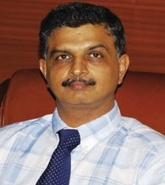

Dr. Vikram I Shah
QUALIFICATIONS
Chairman , MBBS, MS, 38 years of experience
Awards
Developed Orthopaedic Surgeons’ Needle which can pass through both bone and soft tissue easily helping the procedures to get over quickly.
Developed the Zero Technique for Total Knee Replacement surgery.
World record of performing 3,000 knee surgeries in a single centre in the year 2008.
Dr. B.C.Roy International Award for joint replacement surgery.
ABOUT DOCTOR
Currently associated as a Founder, Chairman and the Managing Director of Shalby Hospital, Ahmedabad, Gujarat.
Developed Orthopaedic Surgeons’ Needle which can pass through both bone and soft tissue easily helping the procedures to get over quickly.
Achieved a world record by performing 3,000 knee surgeries in a single centre in the year 2008.
The only Indian surgeon to be selected on the Board of Designers of Zimmer Inc., USA and the only faculty invited from South East Asia Joint Replacement conference at London.
Expertise in Total Knee Replacement Surgery. Specializes in Joint Replacement Surgery, Orthopedics and Orthopedic Surgery.
Bestowed with the Dr. B.C.Roy International Award for joint replacement surgery.
SPECIALIZATION :
Total Knee Replacement
Minimally Invasive Knee Replacement
WORK EXPERIENCE
Chairman, Shroff Eye Hospital, Mumbai
List Of Treatments
Elbow Replacement Surgery,
Elbow Arthroscopy,
Lateral Epicondyle Release (Tennis Elbow),
Fracture reduction and fixation,
Osteotomy,
Arthrolysis,
Shoulder Replacement Surgery,
Open Reduction of Fracture,
Repair of Shoulder Rotator Cuff,
Acromioclavicular Joint Repair,
Repair of dislocations,
Shoulder Labral Tears Surgery,
Surgical decompression,
Extensor mechanism realignment,
Arthrotomy,
Arthroscopic surgery,
Reduction of fractures open,
Closed Reduction for Fracture,
Arthroplasty,
Carpal Tunnel Release (CTR) Open or Endoscopic,
...show all.